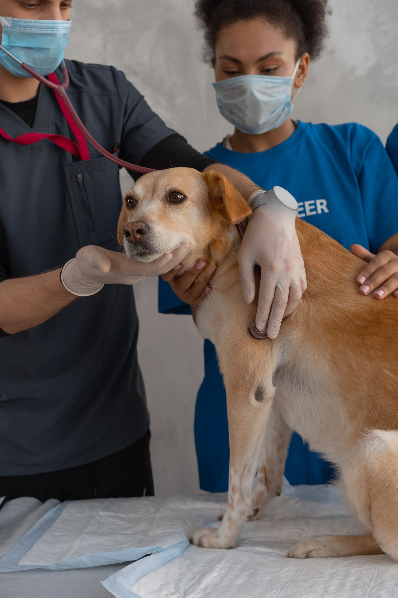

Forum Animal Hospital
A full-service veterinary hospital in Columbia, caring for dogs, cats, and exotics.

About
Forum Animal Hospital is a full-service veterinary hospital in Columbia, also known as Horton Animal Hospital-Forum. Care covers dogs, cats, and exotics, including rabbits, guinea pigs, ferrets, rodents, and reptiles. Services run from preventative and wellness care through diagnostics, dental, surgery, hospitalization, boarding, and grooming.
Veterinary services
Preventative and wellness care
Preventative and wellness care for dogs, cats, and exotics.
Diagnostics
Diagnostics, listed among the hospital services.
Radiology
Radiology, listed among the hospital services.
Ultrasound
Ultrasound, listed among the hospital services.
Dental
Dental care, listed among the hospital services.
Surgery
Surgery, listed among the hospital services.
Hospitalization
Hospitalization, listed among the hospital services.
Boarding
Boarding, listed among the hospital services.
Grooming
Grooming, listed among the hospital services.
Dogs, cats, and exotics under one roof
Forum Animal Hospital cares for dogs, cats, and exotics, including rabbits, guinea pigs, ferrets, rodents, and reptiles. Call (573) 446-3227 to ask about an appointment.
Gallery

All gallery photos are stock photos, labeled as such. They show the kind of work and setting described on this page, not this business.
Visit
Address: 2200 Chapel Plaza Ct, Columbia, MO 65203
Hours: Monday to Thursday 7:30 AM to 7:00 PM, Friday 7:30 AM to 5:00 PM, Saturday 7:30 AM to 12:00 PM.
Phone: (573) 446-3227
Contact
Forum Animal Hospital serves Columbia, MO. Questions? Call (573) 446-3227.